NIF / ALIVE
Hi, I'm NIF.
Soon To Be Content Creator • Doing Stupid Shenanigans
Hi, there :D
I'm NIF, and i make... well... modpack and... something else i guess...
Listen dude, i'm new to this website thingy so stfu okay?...
ABOUT ME
Most of my projects started as personal setups for Minecraft. I usually take something I already enjoy and put it together until it feels right.
If you happen to enjoy them too, feel free to download and use them.
LOOKING FOR ME?